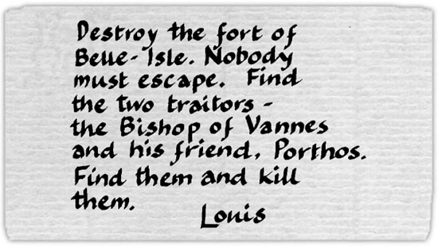

Listen to Part 1:
Bốn tuần đã trôi qua. Nhà vua triệu tập toàn bộ các bộ trưởng của mình tại thành phố Nantes.
Nhà vua hỏi Colbert: 'D'Artagnan đâu?'
Lúc đó, D'Artagnan bước vào phòng.
Nhà vua vui vẻ cất tiếng: 'D'Artagnan!'
D'Artagnan tỏ ra giận dữ. Ông nói: 'Thưa Đức vua, lính ngự lâm của ngài đã tấn công gia đình ngài Fouquet. Đức vua có ra lệnh cho họ làm vậy không?'
Louis đáp: 'Không!'
D'Artagnan nói: 'Vậy thì lệnh đó đến từ ngài Colbert!' Ông chỉ vào Colbert. 'Ông ta đã ra lệnh!'
Louis nói: 'Lệnh gì kia? Kể cho ta nghe.'
D'Artagnan nói: 'Thưa Đức vua, ai đó đã ra lệnh cho lính ngự lâm của ngài lục soát nhà của ngài Fouquet. Họ đánh đập người hầu của ông ấy. Họ bắt giữ bạn bè và gia đình ông ấy.'
Nhà vua nói: 'D'Artagnan! Quên chuyện này đi! Ta ra lệnh cho ông. Ông đã bắt giữ Fouquet chưa?'
Listen to Part 2:
D'Artagnan đáp: 'Thưa Đức vua, vâng ạ'
Nhà vua hỏi: 'Giờ ông ấy ở đâu?'
D'Artagnan trả lời: 'Ông ấy đang trên đường tới Bastille.'
Louis hỏi: 'Tại sao ông không đi cùng ông ấy? Ông ấy không được phép trốn thoát.'
Đội trưởng của lính ngự lâm nói: 'Ngài phải hiểu điều này, thưa Đức vua. Tôi muốn ngài Fouquet trốn thoát. Tôi đã cử những người lính tồi tệ nhất của mình làm lính canh cho ông ấy. Tôi không thể trở thành kẻ thù của ngài Fouquet. Ông ấy là một người tốt. Ông ấy đã trả tự do cho ngài ở Bastille. Ngài phải nhớ điều đó.'
Nhà vua im lặng trong khoảng một hoặc hai phút. Rồi ông lên tiếng.
Ông nói một cách lạnh lùng: 'D'Artagnan, ông phải tới Belle-Isle hôm nay. Đưa theo hai trăm người. Ông phải chiếm hòn đảo và pháo đài đó. Đừng trở về đây nếu thiếu chìa khóa của pháo đài Belle-Isle!'
D'Artagnan rời khỏi phòng và Colbert đi theo ông.
Bộ trưởng nói: 'Ông có bạn bè trên Belle-Isle, D'Artagnan. Và giờ ông phải giết bạn bè của mình!'
Colbert cười và quay trở lại với nhà vua.
Listen to Part 3:
Mười lăm phút sau, D'Artagnan nhận được một mệnh lệnh từ vua Louis.
